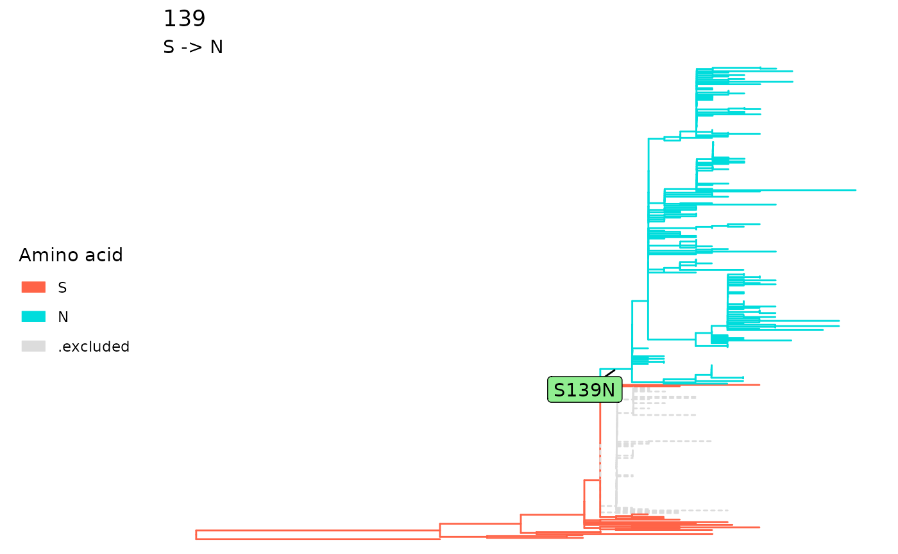
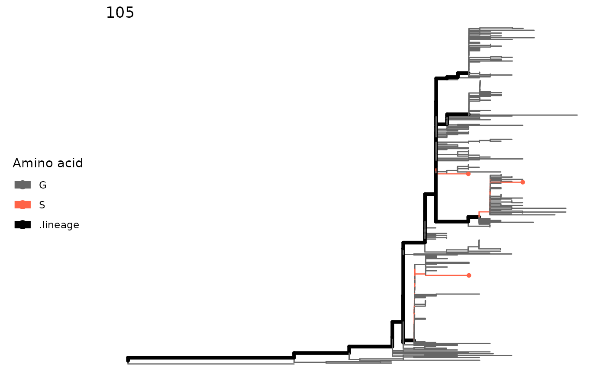
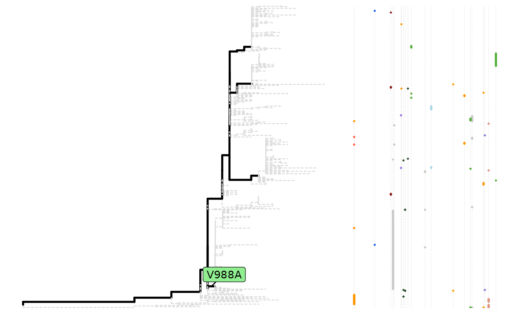
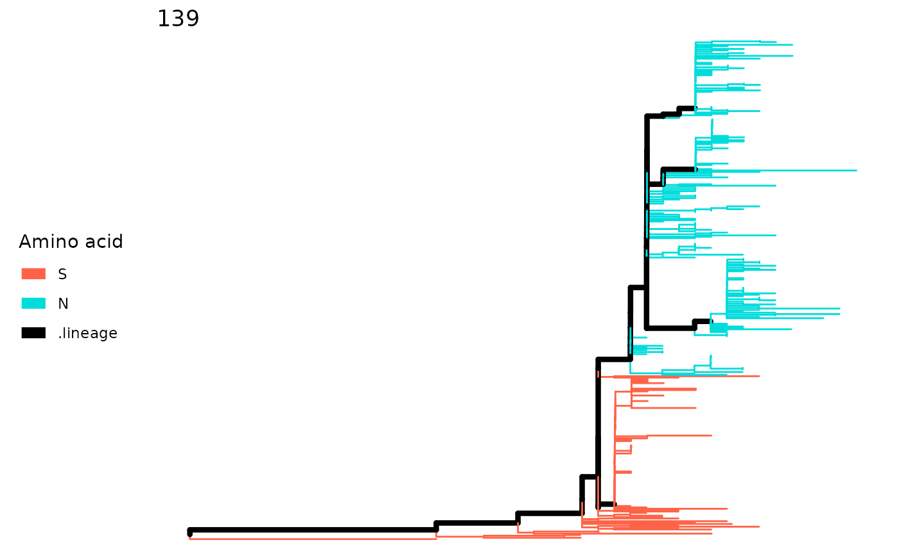

Use sitePath to find fixation and parallel sites
Chengyang Ji
Source:vignettes/sitePath.Rmd
sitePath.RmdAbstract
In viral evolution, fixed substitutions in the nucleic acid or protein level are closely associated with maintaining viral function, while parallel mutation reflects the competitive nature in adaptive selection. The continued accumulation of large-scale viral sequence data enhances the challenge of identifying important mutations in a quick and accurate manner. In sitePath, the phylogenetic tree was separated into a set of inheritable phylogenetic pathways via an automated pathway-division method. Then, for each phylogenetic pathway, the identification of fixed substitutions was transformed into a local-optimal-solution problem directed by a minimal entropy algorithm. Finally, the parallel mutation was determined based on the recurrence of mutations among at least two phylogenetic pathways.
Introduction
The sitePath package is made for the high-throughput identification of fixed substitutions and parallel mutations in viruses from a single phylogenetic tree. This is achieved by three major steps:
- Clustering phylogenetic terminals
- Identifying phylogenetic pathways
- Finding fixed and parallel mutations
Clustering phylogenetic terminals
The firs step is to import phylogenetic tree and multiple sequence alignment files. For now, sitePath accepts phylo object and alignment object. Functions from ggtree and seqinr are able to handle most file formats.
Import tree file
The S3 phylo class is a common data structure for phylogenetic analysis in R. The CRAN package ape provides basic parsing function for reading tree files. The Bioconductor package treeio provides more comprehensive parsing utilities.
library(sitePath)
tree_file <- system.file("extdata", "ZIKV.newick", package = "sitePath")
tree <- read.tree(tree_file)It is highly recommended that the file stores a rooted tree as R would consider the tree is rooted by default and re-rooting the tree in R is difficult. Also, we expect the tree to have no super long branches. A bad example is shown below:

Import sequence alignment file
Most multiple sequence alignment format can be parsed by seqinr. There is a wrapper function for parsing and adding the sequence alignment. Set “cl.cores” in options to the number of cores you want to use for multiprocessing.
alignment_file <- system.file("extdata", "ZIKV.fasta", package = "sitePath")
# options(list("cl.cores" = 10))
paths <- addMSA(tree, alignment_file, "fasta")Identifying phylogenetic pathways
After importing the tree and sequence file, sitePath is ready to identify phylogenetic pathways.
The impact of threshold on resolving lineages
The impact of threshold depends on the tree topology hence there is no universal choice. The function sneakPeak samples thresholds and calculates the resulting number of paths. The use of this function can help choose the threshold.
preassessment <- sneakPeek(paths, makePlot = TRUE)
Choose a threshold
The default threshold is the first ‘stable’ value to produce the same number of phylogenetic pathways. You can directly use the return of addMSA if you want the default or choose other threshold by using function lineagePath. The choice of the threshold really depends. Here 18 is used as an example.
paths <- lineagePath(preassessment, 18)
paths
#> This is a 'lineagePath' object.
#>
#> 4 lineage paths using 18 as "major SNP" thresholdYou can visualize the result.
plot(paths)
Finding fixed and parallel mutations
Now you’re ready to find fixation and parallel mutations.
Entropy minimization
The sitesMinEntropy function perform entropy minimization on every site for each lineage. The fixation and parallel mutations can be derived from the function’s return value.
minEntropy <- sitesMinEntropy(paths)Fixation mutations
The hierarchical search is done by fixationSites function. The function detects the site with fixation mutation.
fixations <- fixationSites(minEntropy)
fixations
#> This is a 'fixationSites' object.
#>
#> Result for 4 paths:
#>
#> 139 894 2074 2086 2634 3045 988 1143 2842 3398 107 1118 3353
#> No reference sequence specified. Using alignment numberingTo get the position of all the resulting sites, allSitesName can be used on the return of fixationSites and also other functions like SNPsites and parallelSites.
allSites <- allSitesName(fixations)
allSites
#> [1] "139" "894" "2074" "2086" "2634" "3045" "988" "1143" "2842" "3398"
#> [11] "107" "1118" "3353"If you want to retrieve the result of a single site, you can pass the result of fixationSites and the site index to extractSite function. The output is a sitePath object which stores the tip names.
sp <- extractSite(fixations, 139)It is also possible to retrieve the tips involved in the fixation of the site.
extractTips(fixations, 139)
#> [[1]]
#> [1] "ANK57896" "AMD61711" "AQS26698" "APG56458" "AUI42289" "AMR39834"
#> [7] "AWH65848" "APO08504" "AMX81917" "AVZ47169" "AMX81916" "AMD61710"
#> [13] "AMK49492" "AMX81915" "AOC50652" "APH11611" "BBC70847" "AUF35022"
#> [19] "ATL14618" "AUF35021" "AVV62004" "BAX00477"
#> attr(,"AA")
#> [1] "S"
#>
#> [[2]]
#> [1] "BAV89190" "AOI20067" "AMM43325" "AMM43326" "AUI42329"
#> [6] "AUI42330" "ANC90425" "AMT75536" "ANF16414" "AMR68932"
#> [11] "ANA12599" "AMM39806" "AMR39830" "AMV49165" "AMO03410"
#> [16] "ANO46307" "AVG19275" "ANN44857" "ANO46306" "ANO46309"
#> [21] "ANO46305" "ANO46303" "ARB08102" "ANO46302" "AHZ13508"
#> [26] "ANO46304" "ANO46301" "ANO46308" "AOG18296" "AOO19564"
#> [31] "AUI42194" "APC60215" "AMQ48986" "ATG29307" "ART29828"
#> [36] "AWF93617" "ATG29284" "ATG29287" "ATG29303" "AWF93619"
#> [41] "AWF93618" "AQM74762" "AUD54964" "AQM74761" "ATG29306"
#> [46] "ASL68974" "ATG29267" "ASL68978" "AQX32985" "ATG29315"
#> [51] "AQZ41956" "ARI68105" "ASU55505" "AQZ41949" "ASL68979"
#> [56] "ATG29299" "ATI21641" "ATG29270" "ATG29291" "AOY08536"
#> [61] "ANO46297" "ANO46298" "AQZ41950" "AQZ41951" "ARU07183"
#> [66] "ANG09399" "AQZ41954" "AOY08533" "AQZ41947" "AQZ41948"
#> [71] "ATG29292" "ATG29295" "AOW32303" "AVZ25033" "AOC50654"
#> [76] "AQZ41953" "ATG29301" "ATG29276" "APO08503" "AMC13913"
#> [81] "AMC13912" "APO39243" "APO39229" "AQZ41952" "AQZ41955"
#> [86] "AMK49165" "ARB07976" "APB03018" "AMC13911" "APB03019"
#> [91] "ASU55416" "ANK57897" "AWH65849" "AMZ03556" "ASU55417"
#> [96] "ANW07476" "APY24199" "AMA12086" "AMH87239" "APY24198"
#> [101] "APO36913" "ALX35659" "AOG18295" "ANQ92019" "AML81028"
#> [106] "APY24200" "AMD16557" "ARU07074" "AOX49264" "AOX49265"
#> [111] "AOY08518" "ARB07962" "AMX81919" "AMM39805" "ARX97119"
#> [116] "AMB37295" "AMK79468" "AML82110" "AMR39831" "AMX81918"
#> [121] "ANC90426" "ALU33341" "ASB32509" "AMA12085" "AMU04506"
#> [126] "AMA12087" "AMA12084" "AQU12485" "AMS00611" "AMQ48981"
#> [131] "AOY08538" "APH11492" "AOY08517" "AOY08541" "AOO54270"
#> [136] "AND01116" "ARU07076" "AMK49164" "APG56457" "AOR82892"
#> [141] "ATB53752" "ANH10698" "AOR82893" "ARU07075" "AMB18850"
#> [146] "YP_009428568" "AMQ48982" "ART29823" "APW84876" "ASK51714"
#> [151] "ARB07953" "APW84872" "AOY08525" "APW84873" "AOY08535"
#> [156] "AVZ25035" "ARB07932" "AOY08523" "AOY08542" "ASW34087"
#> [161] "AOY08537" "APB03020" "ART29826" "ART29825" "AOS90220"
#> [166] "AMN14620" "APW84874" "APW84875" "BAV82373" "AOS90221"
#> [171] "AOS90224" "APB03021" "APO39232" "AOS90223" "APO39237"
#> [176] "ANH22038" "APW84877" "APO39236" "AOY08546" "AOY08516"
#> [181] "APO39233" "AOS90222" "AOO53981" "AOY08521" "AOO85388"
#> [186] "APO39228" "ARB07967" "ANF04752" "AOE22997" "APQ41782"
#> [191] "APQ41786" "ASU55393" "ASU55404" "ASU55423" "ANB66182"
#> [196] "ASU55425" "ASU55420" "AQX32986" "ASU55422" "APQ41784"
#> [201] "ANC90428" "ASU55415" "ASU55418" "ARM59239" "ASU55408"
#> [206] "ASU55424" "ASU55390" "ASU55419" "ASU55391" "AMM39804"
#> [211] "ASU55411" "ANB66183" "ASU55421" "AMZ03557" "ASU55392"
#> [216] "AQX32987" "ASU55403" "ASU55399" "APQ41783" "ANS60026"
#> [221] "ANB66184" "ASU55426" "ASU55412" "ASU55413" "ASU55410"
#> [226] "ASU55397" "ASU55400" "ASU55409" "APB03017" "ASU55395"
#> [231] "ASU55396" "AOY08524" "ASU55394" "ASU55414" "ASU55405"
#> [236] "AMC33116" "ASU55406" "ASU55398" "ASU55407" "AMQ34003"
#> [241] "AMQ34004" "ASU55401" "ASU55402"
#> attr(,"AA")
#> [1] "N"Use plot on a sitePath object to visualize the fixation mutation of a single site. Alternatively, use plotSingleSite on an fixationSites object with the site specified.
plot(sp)
plotSingleSite(fixations, 139)
To have an overall view of the transition of fixation mutation:
plot(fixations)
Parallel mutations
Parallel mutation can be found by the parallelSites function. There are four ways of defining the parallel mutation: all, exact, pre and post. Here exact is used as an example.
paraSites <- parallelSites(minEntropy, minSNP = 1, mutMode = "exact")
paraSites
#> This is a 'parallelSites' object.
#>
#> Result for 4 paths:
#>
#> 105 1264 1226 1717 988 2611 2787 2749 3328 3162 1857 3046 1016 1171 1327 3076 106 2357 573 1404 940 1180
#> No reference sequence specified. Using alignment numberingThe result of a single site can be visualized by plotSingleSite function.
plotSingleSite(paraSites, 105)
To have an overall view of the parallel mutations:
plot(paraSites)
Additional functions
This part is extra and experimental but might be useful when pre-assessing your data. We’ll use an example to demonstrate.
Inspect one site
The plotSingleSite function will color the tree according to amino acids if you use the output of lineagePath function.
plotSingleSite(paths, 139)
plotSingleSite(paths, 763)
SNP sites
An SNP site could potentially undergo fixation event. The SNPsites function predicts possible SNP sites and the result could be what you’ll expect to be fixation mutation. Also, a tree plot with mutation could be visualized with plotMutSites function.
snps <- SNPsites(paths)
plotMutSites(snps)
plotSingleSite(paths, snps[4])
plotSingleSite(paths, snps[5])
Session info
sessionInfo()
#> R Under development (unstable) (2022-01-14 r81484)
#> Platform: x86_64-pc-linux-gnu (64-bit)
#> Running under: Ubuntu 20.04.3 LTS
#>
#> Matrix products: default
#> BLAS/LAPACK: /usr/lib/x86_64-linux-gnu/openblas-pthread/libopenblasp-r0.3.8.so
#>
#> locale:
#> [1] LC_CTYPE=en_US.UTF-8 LC_NUMERIC=C
#> [3] LC_TIME=en_US.UTF-8 LC_COLLATE=en_US.UTF-8
#> [5] LC_MONETARY=en_US.UTF-8 LC_MESSAGES=en_US.UTF-8
#> [7] LC_PAPER=en_US.UTF-8 LC_NAME=C
#> [9] LC_ADDRESS=C LC_TELEPHONE=C
#> [11] LC_MEASUREMENT=en_US.UTF-8 LC_IDENTIFICATION=C
#>
#> attached base packages:
#> [1] stats graphics grDevices utils datasets methods base
#>
#> other attached packages:
#> [1] sitePath_1.11.0 BiocStyle_2.23.1
#>
#> loaded via a namespace (and not attached):
#> [1] ggrepel_0.9.1 Rcpp_1.0.8 ape_5.6-1
#> [4] lattice_0.20-45 tidyr_1.1.4 rprojroot_2.0.2
#> [7] digest_0.6.29 utf8_1.2.2 R6_2.5.1
#> [10] evaluate_0.14 highr_0.9 ggplot2_3.3.5
#> [13] pillar_1.6.4 ggfun_0.0.4 yulab.utils_0.0.4
#> [16] rlang_0.4.12 lazyeval_0.2.2 jquerylib_0.1.4
#> [19] rmarkdown_2.11 pkgdown_2.0.2.9000 labeling_0.4.2
#> [22] textshaping_0.3.6 desc_1.4.0 stringr_1.4.0
#> [25] munsell_0.5.0 compiler_4.2.0 xfun_0.29
#> [28] pkgconfig_2.0.3 systemfonts_1.0.3 gridGraphics_0.5-1
#> [31] htmltools_0.5.2 tidyselect_1.1.1 tibble_3.1.6
#> [34] gridExtra_2.3 bookdown_0.24 fansi_1.0.2
#> [37] crayon_1.4.2 dplyr_1.0.7 MASS_7.3-55
#> [40] grid_4.2.0 nlme_3.1-155 jsonlite_1.7.3
#> [43] gtable_0.3.0 lifecycle_1.0.1 magrittr_2.0.1
#> [46] scales_1.1.1 tidytree_0.3.7 stringi_1.7.6
#> [49] cachem_1.0.6 farver_2.1.0 fs_1.5.2
#> [52] ggtree_3.3.1 seqinr_4.2-8 bslib_0.3.1
#> [55] ellipsis_0.3.2 ragg_1.2.1 generics_0.1.1
#> [58] vctrs_0.3.8 RColorBrewer_1.1-2 tools_4.2.0
#> [61] treeio_1.19.1 ade4_1.7-18 ggplotify_0.1.0
#> [64] glue_1.6.0 purrr_0.3.4 parallel_4.2.0
#> [67] fastmap_1.1.0 yaml_2.2.1 colorspace_2.0-2
#> [70] BiocManager_1.30.16 aplot_0.1.2 memoise_2.0.1
#> [73] knitr_1.37 patchwork_1.1.1 sass_0.4.0